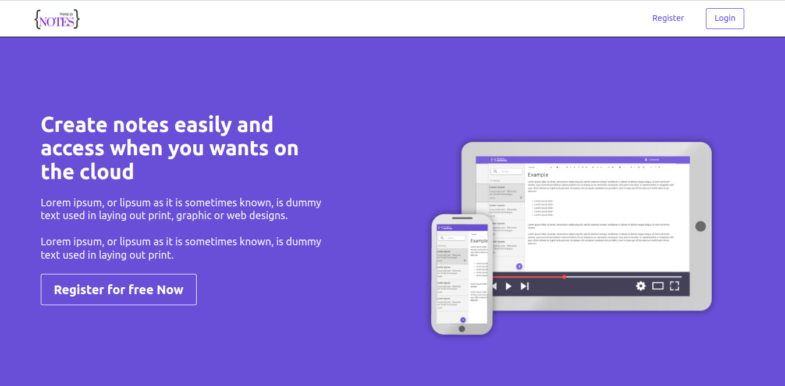
Notes App
App de notas realizado com ReactJs totalmente responsivo, onde pode criar uma conta e criar suas notas e editar, com interação com API.
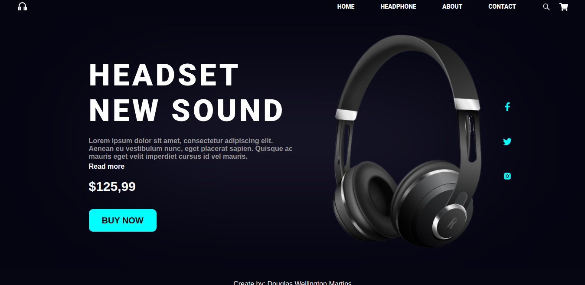
Landing Page
Landing page de uma loja de Headphones realizada com ReactJs, totalmente responsiva com um designer futurístico.
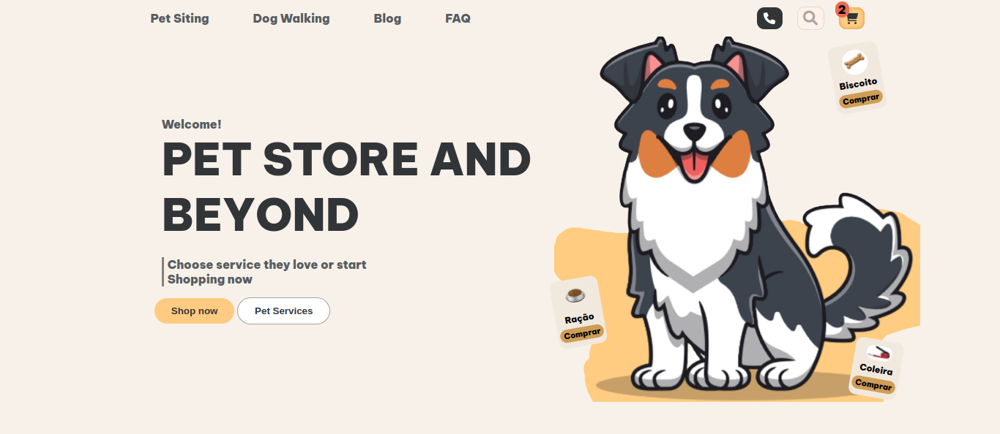
Landing Page
Landing page de uma loja de animais, landing page totalmente responsiva.
Clone do site da Netflix
Clone do Site da Netflix, projeto em andamento!
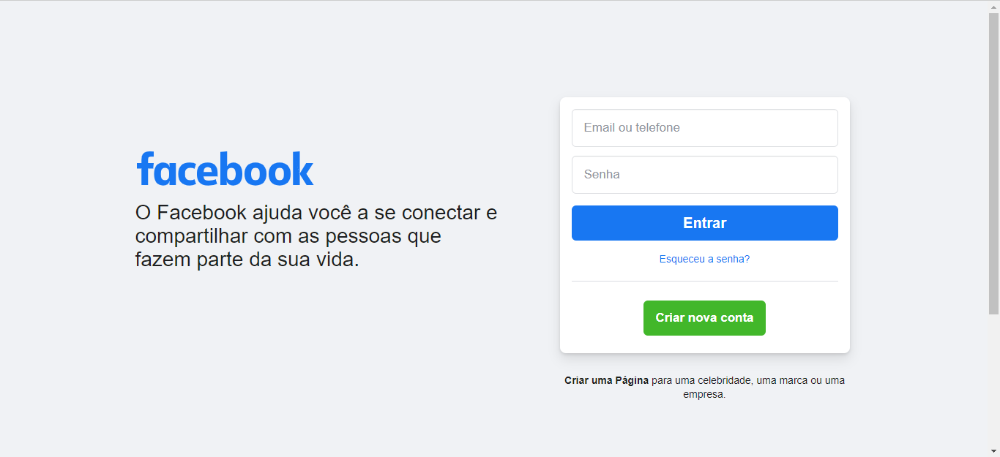
Clone da página de login do Facebook
Clone da página do facebook utilizando HTML, CSS, e JavaScript
Clone do Spotify
Clone do Spotify realizado durante o curso de desenvolvimento Web, utilizando Bootstrap, deixando o mesmo responsivo para todos os dispositivos
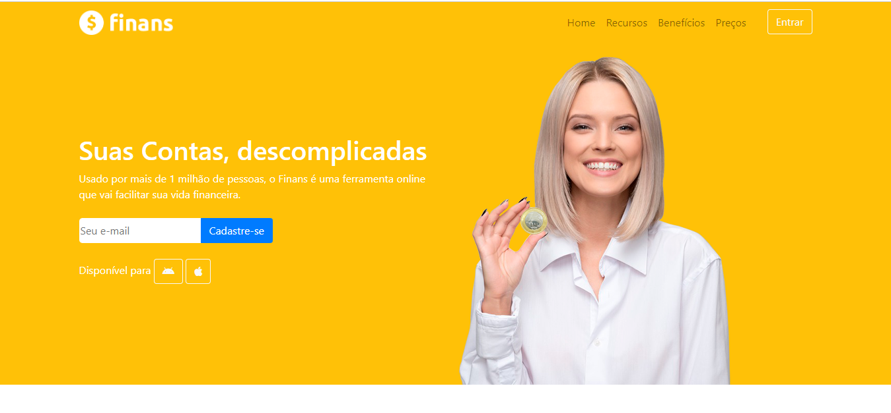
Site de Finanças
Projeto de um site fictício de finanças, site totalmente responsivo.
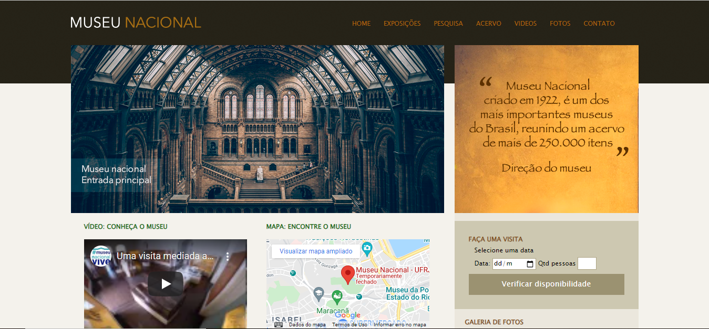
Museu Nacional
Site fictício do Museu Nacional, utilizando Bootstrap.
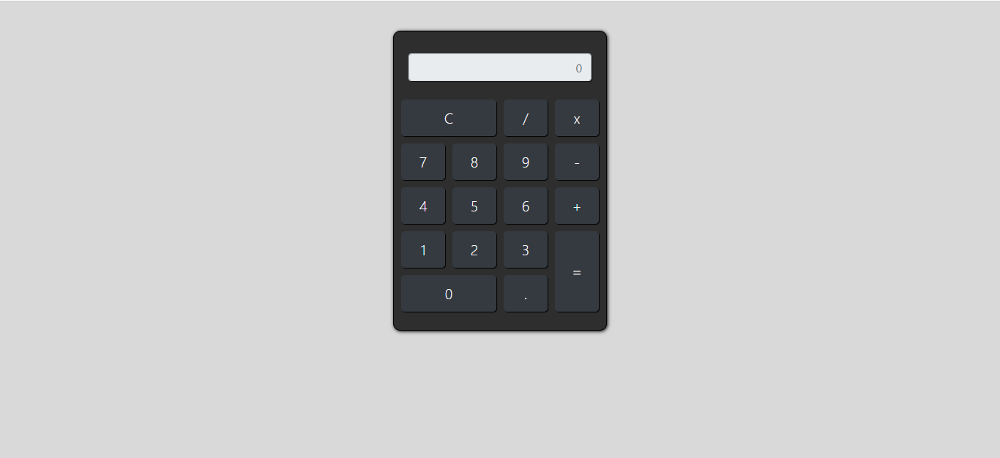
Calculadora
Calculadora feia com HTML, CSS e JavaScript
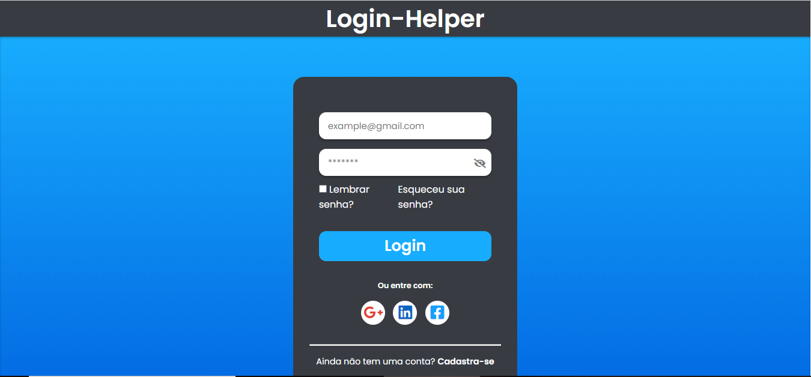
Login Helper
Desenvolvimento de um formulário de login.
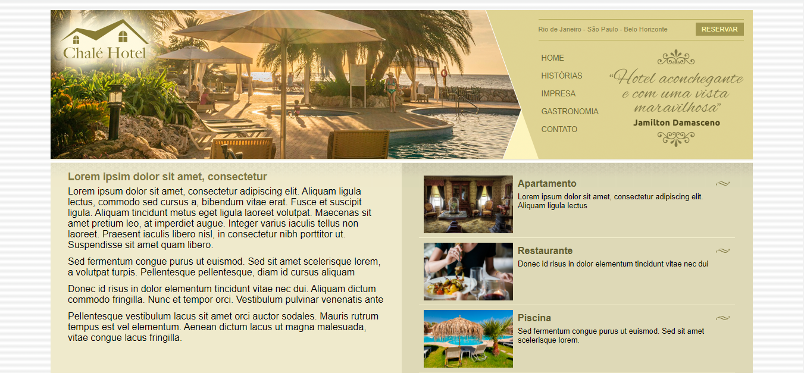
Chale Hotel
Site fictício de um chalé hotel
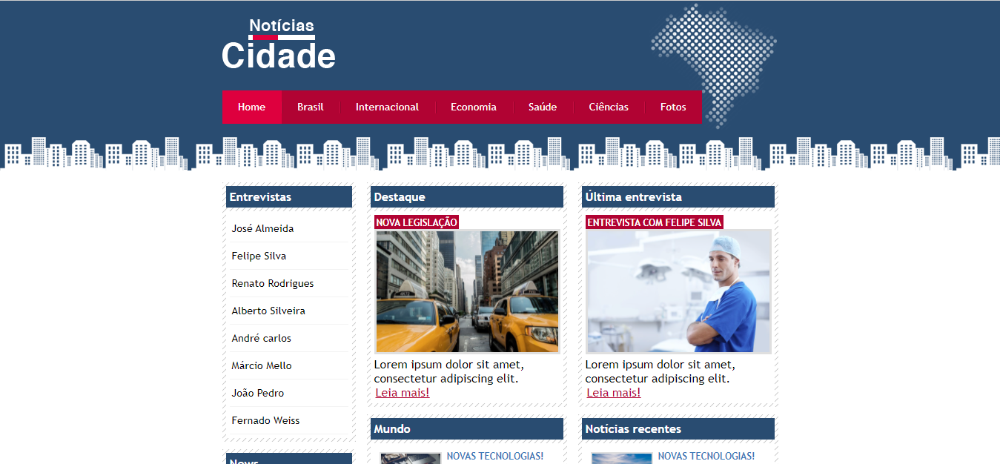
Notícias cidade
Projeto básico de um site fictício de notícias
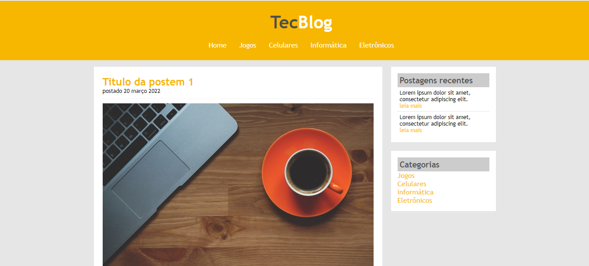
Tec Blog
Blog de tecnologia fictício
Tela de Login
Projeto de tela de login com apenas HTML e CSS